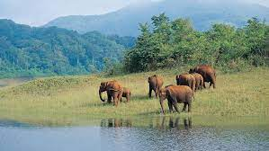

Idukki

Idukki (ഇടുക്കി), is one of the 14 districts in the Indian state of Kerala. Idukki district lies amid the Cardamom Hills of Western Ghats in Kerala. Idukki district contains two municipal towns - Kattappana and Thodupuzha. The district currently includes five taluks in it.
Tourist Spots
Idukki Wildlife Sanctuary

Idukki Wildlife Sanctuary is Wildlife Sanctuary located in Idukki district of Kerala, India. Situated around the catchment area of Idukki Dam, the Idukki Wildlife Sanctuary is rich in biodiversity and rich flora and fauna
Periyar National Park
Periyar National Park and Wildlife Sanctuary is a protected area located in the districts of Idukki and Pathanamthitta in Kerala, India. It is notable as an elephant reserve and a tiger reserve. The protected area encompasses 925 km², of which 305 km² of the core zone was declared as the Periyar National Park in 1982. The park is a repository of rare, endemic, and endangered flora and fauna and forms the major watershed of two important rivers of Kerala: the Periyar and the Pamba. The park is located high in the Cardamom Hills and Pandalam Hills of the south Western Ghats along the border with Tamil Nadu. It is 4 km from Kumily, approximately 100 km east of Kottayam, 110 km west of Madurai and 120 km southeast of Kochi